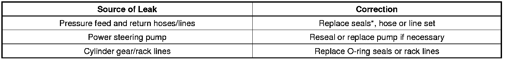
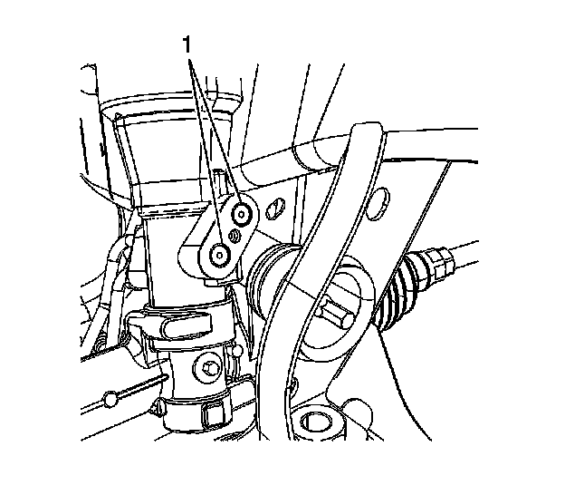
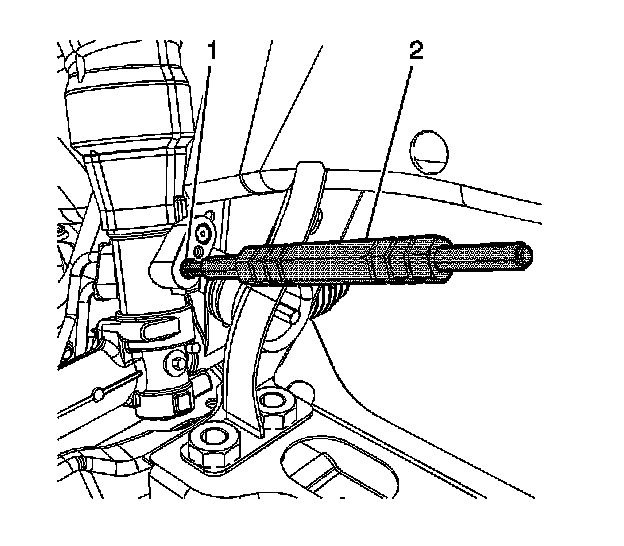

Steering - Power Steering Leaking Fluid
INFORMATIONBulletin No.: 07-02-32-002M
Date: March 27, 2012
Subject: -Hydraulic Power Steering System Leak Required Diagnostic Actions
Models:
2005-2013 GM Passenger Cars and Trucks
Equipped with Hydraulic Steering
Supercede:
This bulletin is being revised to update the model years. Please discard Corporate Bulletin Number 07-02-32-002L (Section 02 - Steering).
Condition
Some customers may comment on a fluid leak under the front of the vehicle. Upon further investigation, the technician may find fluid leaking from the power steering system. Please use the following information to assist in diagnosis.
Diagnostic Information
Important
All potential leaks should be completely cleaned and identified before attempting to repair or replace any power steering components.
1. Start diagnosis by inspecting the fluid level in the power steering reservoir. If the fluid level is NOT low, a careful analysis of the condition is necessary as it may involve a different type of fluid leak.
2. Visually inspect the components where the fluid has accumulated.
3. Before the component is replaced, inspect fittings and connections for proper torque.
4. Clean the area around connections, joints and seals with engine degreaser.
5. Add fluorescent dye (such as Kent Moore GE 28431-6) to the power steering fluid.
6. Start the vehicle and allow the power steering system to reach normal operating temperatures.
7. Turn the steering wheel to the stops in each direction while bumping the steering wheel against the stops 3-4 times. This will build maximum steering system pressure and help identify the source of the leak if present.
Caution
DO NOT hold the steering wheel against the stops as this will damage the power steering pump.
8. Determine the source of the leak.
9. When returning the part to the Warranty Parts Center (WPC), mark the component with the location of the leak using a paint marker, paint or tape to highlight the location of the leak.
10. If a repeatable leak is found, refer to the following tables to determine the proper corrective action needed.
Repairable Leaks

*Steering Line Fitting Seals
Some vehicles are equipped with a "duck-bill" style seal that is pierced by the power steering line during installation to the gear at vehicle assembly. Vehicles that are equipped with this type seal are:
- 2010-2013 Buick LaCrosse
- 2011-2013 Buick Regal
- 2007-2013 Cadillac Escalade
- 2005-2013 Chevrolet Malibu
- 2007-2013 Chevrolet Avalanche, Silverado, Suburban, Tahoe
- 2007-2013 GMC Sierra, Yukon, Yukon XL, Yukon Denali, Yukon Denali XL
- 2006-2010 Pontiac G6
- 2007-2009 Saturn AURA


These seals are replaceable and any leak at the line to gear connection on these vehicles should be first addressed with a seal replacement. Use a J-44586 Power Steering Gear Oil Seal Remover/Installer (2) to replace the seals (1).
Non-Repairable Leaks

*If fluid is observed at the adjuster plug during the initial visual inspection, then refer to the following:
- Seepage at the adjuster plug may not necessarily indicate an active leak. Power steering fluid is used during the manufacturing of the gear/rack. The fluid used at assembly is pushed into the pinion area during assembly. The adjuster plug and the area below the pinion are not positively sealed. Fluid trapped in this area during assembly may seep from the adjuster plug. The rack should not be replaced for this condition.
- You can distinguish seepage from an active leak by removing the left tie rod boot clamp and inspecting for the presence of fluid at the inner tie rod.
- If no fluid is found in the left tie rod boot, replace the boot clamp and clean the seepage from the rack. No further action is needed.
- If fluid is found in the left tie rod boot, replace the gear assembly.
Warranty Information
For vehicles repaired under warranty please refer to the Labor Time Guide and claim the applicable Labor Operation for the repaired or replaced component. Failure to return the replaced part with the location of the leak clearly marked or if there is no evidence of dye being used to identify the source of the leak may result in a debit of the entire warranty claim.

Disclaimer